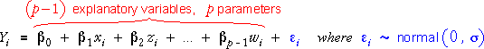

Problems with all data points
The relationship between a reponse and two explanatory variables is not always described well by the multiple linear regression model,

Some problems relate to the fit of the model to all data points.
Nonlinearity and interaction were investigated in the previous two sections.
Problems with a single data point
Other problems that are specific to a few data points will be investigated in this section.
Diagnostics for outliers, leverage and influence
These problems were investigated earlier for models with a single explanatory variable. The regression diagnostics that are described in this section are extensions of these. They will be further extended later to models with three or more explanatory variables where they are specially important since the raw data cannot be fully examined with scatterplots.
We write the general linear model in the form,

To foreshadow the general linear model with p explanatory variables, we phrase some guidelines for the regression diagnostics in terms of p.
Note that p = 2 for the simple linear model and p = 3 for the regression model with two explanatory variables.